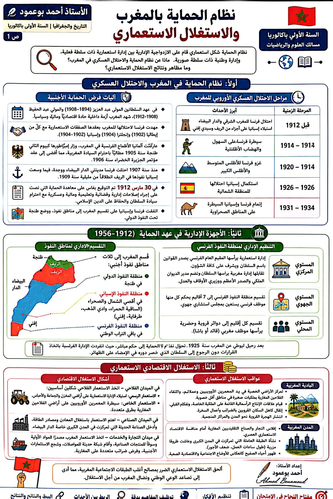
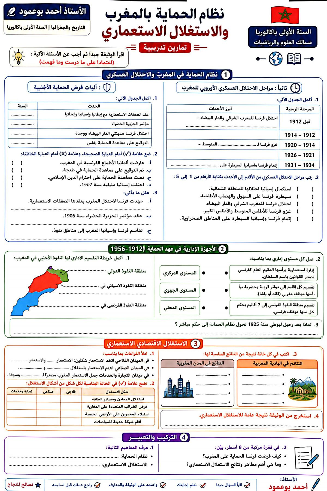

مؤسسة الحنان للتعليم الخاص
مادة التاريخ والجغرافيا
الموسم الدراسي
2025 / 2026
2025 / 2026
مادة التاريخ | المستوى: الأولى باكالوريا
نظام الحماية بالمغرب والاستغلال الاستعماري
الدرس الثامن · التاريخ📘
مقدمة
ساهمت الأزمة الداخلية التي عرفها المغرب بين 1900 و1912م، إلى جانب نجاح فرنسا في حسم خلافاتها الاستعمارية بواسطة مجموعة من التسويات، في وقوع المغرب تحت نظام الحماية (مارس 1912م)، ليخضع لمظاهر مختلفة من الاستغلال الاستعماري كانت له عواقب وخيمة على الاقتصاد والمجتمع المغربي.
❓
الإشكالية المركزية
ما الأسس التي ارتكز عليها نظام الحماية بالمغرب؟ وما وسائل وأشكال الاستغلال الاستعماري وانعكاساتها على المغرب؟
💸 الأزمة الداخلية
أزمة مالية حادة وفراغ خزينة الدولة دفعت المغرب للاقتراض بشروط مجحفة، وثورات داخلية (بوحمارة والريسوني)، وصراع على العرش انتهى بإبعاد المولى عبد العزيز سنة 1908 وتولية المولى عبد الحفيظ الذي عجز عن التصدي للأطماع.
🤝 مؤتمر الجزيرة الخضراء 1906
بعد صفقات فرنسا الاستعمارية مع إيطاليا وبريطانيا وإسبانيا، انعقد المؤتمر (1906) واعترف لفرنسا وإسبانيا بحق التصرف في المغرب، وأنشأ بنك المغرب، وأقرّ الحرية الاقتصادية للأجانب.
📜 معاهدة فاس (الحماية) 1912
وُقّعت في 30 مارس 1912م، وتضمنت إحداث إدارتين: مخزنية يرأسها السلطان، وفرنسية يرأسها المقيم العام (كان ليوطي أول مقيم عام).
| الفترة | أبرز أحداث الاحتلال |
|---|---|
| قبل 1912 | احتلال فرنسا للمغرب الشرقي والمناطق الممتدة من الدار البيضاء إلى فاس، واستيلاء إسبانيا على سيدي إفني وأجزاء من الريف. |
| 1912 - 1914 | سيطرة فرنسا على السهول والهضاب الأطلنتية. |
| 1914 - 1920 | غزو فرنسا للأطلس المتوسط والأطلس الكبير. |
| 1921 - 1926 | استكمال إسبانيا احتلال المنطقة الشمالية. |
| 1931 - 1934 | استكمال فرنسا وإسبانيا السيطرة على المناطق الصحراوية. |
🇫🇷 منطقة النفوذ الفرنسي
إدارة مركزية على رأسها المقيم العام (سلطات واسعة)، وإدارة جهوية (مناطق عسكرية ومدنية)، وإدارة محلية (البشوات والقياد)، وإدارة مخزنية تقلّصت صلاحياتها لتمارس سلطات شكلية دينية.
🇪🇸 منطقة النفوذ الإسباني
إدارة مركزية على رأسها المندوب السامي بتطوان، وإدارة جهوية ومحلية، مع إدارة مغربية على رأسها خليفة السلطان تحت مراقبة المندوب الإسباني.
🌐 منطقة النفوذ الدولي بطنجة
تحدّد نظامها بموجب مؤتمر باريس 1923م، واعتُبرت جزءًا من السلطة المغربية مع احتفاظها بسيادة السلطان، وأُنشئت ثلاث هيئات لتدبير شؤونها.
🏛️ آليات إدارية
إحداث هيئات ومؤسسات (مصلحة التجارة والصناعة، وكالة المغرب بباريس).
💰 آليات مالية
تشجيع تدفق الأموال الفرنسية نحو المغرب لتوفير الرساميل الضرورية للاستغلال.
🚧 آليات تجهيزية
إنشاء الموانئ والطرق والسكك الحديدية والسدود والمراكز الكهربائية لخدمة الاستغلال.
🏡 آليات عقارية
سياسة الاستيطان الفلاحي وانتزاع أراضي المغاربة وتمليكها للأجانب عبر قانون التحفيظ العقاري.
⛏️ القطاع المنجمي
استحواذ الشركات الأجنبية على المعادن (الفوسفاط، الحديد، الرصاص) واستخراجها ونقلها للخارج.
👥 آليات بشرية
تشجيع الهجرة الأوروبية نحو المغرب، حيث تجاوز عدد الأجانب 100 ألف بحثًا عن الثروة.
🌾 في البادية
إدماج البوادي في اقتصاد نقدي، وسيطرة المعمرين على أجود الأراضي، وتعرّض الفلاحين للفقر والتهميش والضرائب، مما دفعهم للهجرة إلى المدن.
🏭 في المدينة
عاشت الطبقة العاملة أوضاعًا مزرية (أجور هزيلة، حرمان من العمل النقابي، أحياء صفيحية كنموذج كاريان سنطرال).
🎓 في التعليم
اهتمام سلطات الحماية بالتعليم الأوروبي واليهودي على حساب التعليم الإسلامي.
نظام الحماية
نظام استعماري فُرض على المغرب بموجب معاهدة فاس 1912م، بإدارة استعمارية تُشرف على الحكم مع إبقاء شكلي للمخزن.
معاهدة فاس
المعاهدة الموقّعة في 30 مارس 1912م التي كرّست الحماية الفرنسية على المغرب.
المقيم العام
أعلى سلطة في نظام الحماية الفرنسي، يمثل الجمهورية الفرنسية ويمارس سلطات سياسية وإدارية وعسكرية واسعة.
قانون التحفيظ العقاري
أداة قانونية استُعملت لانتزاع أراضي المغاربة وتحويلها إلى ملكية المعمرين.
إنفوغرافيا الدرس ونسخة التمارين من كتيب الأستاذ أحمد بوعمود:

{kind=link}

{kind=link}
✍️
خاتمة
سخّر المستعمر آليات إدارية وسياسية وتنظيمية وتجهيزية وبشرية لاستغلال ثروات المغرب وتسخيره لخدمة الاقتصاد الاستعماري، مما أثار ردود فعل مغربية تجلّت أساسًا في نضال المغاربة ضد نظام الحماية عبر مراحل.
إعداد: الأستاذ أحمد بوعمود — أستاذ الاجتماعيات
مؤسسة الحنان · ahmedbouamoud.com